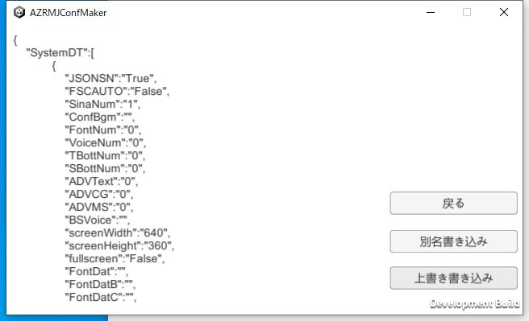

ファイルの変換をしよう
| シナリオを変換してJSonFileにします ConfMakerを立ち上げてください。 起動したらこの画面になります。 |
|
| JS関連の設定というのがあるので、そちらをクリック。 JSTextSetというボタンがあるのでそちらを選びます minisina.txtを本体のTxtフォルダからこちらのTxtフォルダに移動させた後、登録ボタンを押します。 上の欄に登録名を入れる箇所があるので適当な名前をつけて登録します。 決定を押せばテキストリストとして保存されますので戻るで最初の画面に戻ります。 |
 |
| 戻ったら、一旦設定を保存します。 ファイル設定というのがあるので、そちらを選んで、JSON書き込みを押してください 次の画面に進むので、そのまま上書き書き込みを押します |
 |
| シナリオ設定に移動します。JSonConvというボタンがあるので、そちらを押してシナリオデータの変換をします。 ファイルとMP3を元ファイルから取る、とボイスなしにするにチェックを入れて最後まで変換します そうすると、テキストファイルが別に増えて出てくるので、そちらのファイルがJSonで書かれているかを確認したら終了です。 |